¡Hola Nathalia!
Hoy es un día muy especial 🎉

Tus mensajes especiales
Haz clic en las cartas para leer los mensajes:
 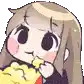
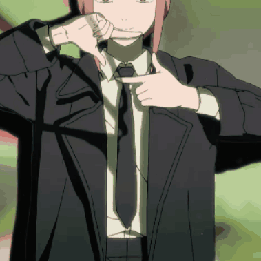
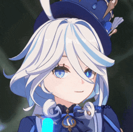
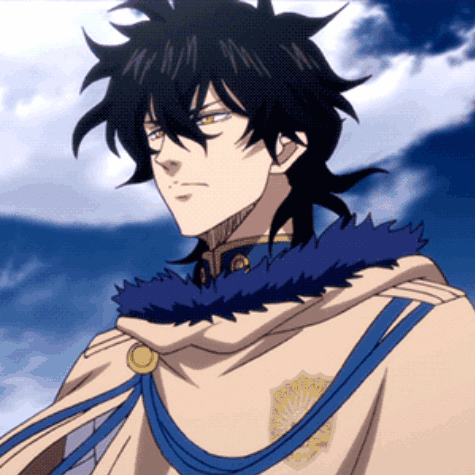
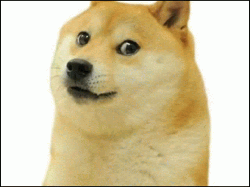
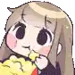
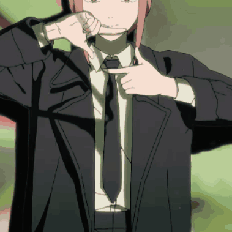
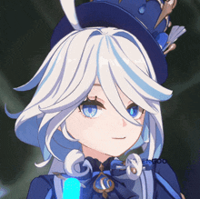
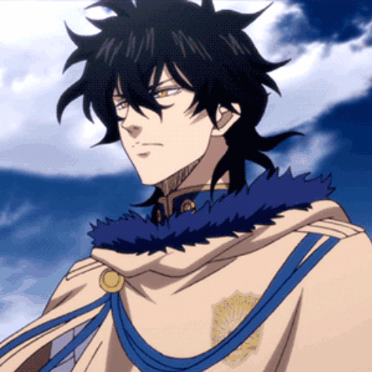
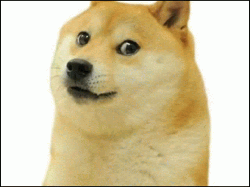
.gif) 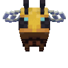
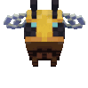

¡Feliz Cumpleaños!
Hola ,hola .
Hoy el mundo se entorna en ti dejando ver otras de sus maravillas y mejores bellezas . Es un día especial, solo porque tú lo haces especial. Paso por aquí dejando unas pequeñas palabras que no se comparan con un gran regaló, pero son con mucho cariño, realmente me siento feliz de pertenecer a esta familia especialmente de saber que eres mi tía me alegra mucho poder celebrar tu cumpleaños. Esta familia hace que estos días sean especiales y llegó tu turno , el turno de desearte un feliz cumpleaños, porque es el día en que las estrellas se alinean para celebrar un día como aquel hace tantos años en que naciste , dónde la tierra sonrió en tu llegada . Quiero empezar deseandote toda la salud , que tus días sean alegres y enérgicos donde la tristeza solo un concepto y no una realidad , deseandote que aquellos anhelos que llevas en tu corazón sean convicción y nunca te rindas en conseguirlos qué nunca sea algo “ suficiente “ sino que siempre obtengas más de lo que deseas .En tus estudios o si trabajas , con saber que estás aquí ya te hace muy especial sobre todo con el cariño que me has mostrado ,seguir viviendo con la racha que lleva tanto tiempo .
♡. Te quiero mucho , me agrada mucho hablar contigo aunque no sea mucho , me gusta ya sea mandar videos y saber que estas allí.
Para terminar esta felicitación te deseo un maravilloso día lleno de felicitaciones, amor , muchos regalos y sobre todo mucho pastel , disfruta junto a tus seres queridos, pásala super y FELIZ CUMPLEAÑOS
cariño :Maki sobrina
Para : Mi tía favorita ❤
Holap sayusin, siy frai el mapache, espero estes bien, y bueno me contaron que esta cerca tu cumpleaños Jsjs y si ya lo estás festejando quiero decirte que muchas felicidades y espero la pases bien, y bueno quiero que sepas que eres una gran amiga y que vales mucho más que el oro, es más tu valor es incalculable, de verdad te aprecio mucho sayu tkm
Rei Peluche
♪· Nathalia, Tú amistad fue lo mejor que me pasó en estos años, fuiste la luz de mis ojos cuando me sumergí en una oscuridad y no veía con claridad, agradezco que seas alguien especial para mí, así como yo lo soy para tí, te deseo un hermoso cumpleaños en este día.
ATT: Moltres
¿Sayu cumple años? Bueno, la verdad es que es conmovedor un recordatorio más de pasar otro año junto a una persona tan excepcional como lo es Sayu.
No te puedo decir que somos los mejores amigos o que tenemos la mejor relación, pero lo poco que he hablado con ella me ha bastado para saber la buena persona que es. Simplemente me da felicidad saber que estás conmigo, estás con nosotros, estás ahí.
Pues nada, no me caben palabras para describir lo feliz que me siento de haber conocido a alguien que tiene el equilibrio de tener personalidad y caer bien; de haber conocido a una persona que me guiaría con la idea loca de adoptar una hija la cual terminó siendo nuestra Estrellita; de haberte quedado ahí cuando la gente necesitó ayuda o respaldo; es un enorme GRACIAS por todo lo que eres y significas.
Te deseo lo mejor y te daré todo lo que me permitas ofrecerte. Tienes incondicionalmente mi apoyo, mi amistad y mi compañía. Dios bendiga tu vida con todo lo que te propongas y que te guarde en todo que tengas de vida.
TQM. ❤
Mirai
Hola pequeña Sayu
No soy muy expresivo, no es sorpresa para nadie pero estas palabras te las dedico con mucho cariño
Hoy es un día bastante especial, es el cumpleaños de una persona tan maravillosa como tu, no es algo que puedas festejar todos los días
Espero hoy en tu día puedas disfrutar de alegrías con las personas que más aprecias
Estoy feliz de que seas mi amiga, eres un gran apoyo para mi, me alegro de poder compartir este dia contigo.
Bueno no tengo mas palabras, solo deseos
Que tengas días llenos de alegría y salud, que tus problemas sean de lo más pequeños y pasajeros, y que te vaya genial en tus estudios y en todo lo que te propongas
Ahora si, sin más palabras, que tengas un muy feliz y maravilloso cumpleaños 🎂🎉
Te quiero mucho 💖
Gogeta
Es increíble como pasa el tiempo, ya es el segundo año que paso contigo en tu cumpleaños, ese hecho me llena de felicidad, agradezco haberte conocido, haber convivido, ser parte de tu círculo de amigos, sinceramente agradezco conocer a alguien tan especial como lo eres tú, puede que no tenga un regalo extravagante, es solo una pequeña dedicatoria hacia la persona que se merece el mundo entero.. La galaxia si es posible, una vez más, gracias por todo sayu, fuiste, eres y serás la persona más especial en mi vida; feliz súper cumpleaños 🐥🎉🎉🎉 te adoro demasiado
Att: asly
Feliz cumpleañooooos. 🦔✨
es más que un día para celebrar tu nacimiento. Es una oportunidad para reconocer la persona en la que te has convertido, el camino que has recorrido, y todo lo que has superado para estar donde estás.
No todos los días se cumple un año más de vida, y por eso vale la pena detenerse un momento y agradecer por lo vivido, lo aprendido y lo que está por venir. Deseo de corazón que este nuevo ciclo te traiga paz interior, claridad en tus decisiones, y la fuerza para seguir avanzando hacia lo que deseas y mereces.
Así como alguien que me ha asistido, me ha aconsejado y sobre todo también me guío en ciertas etapas críticas en mi vida y agradezco mucho eso por haber estado ahí cuando lo necesite, yo valoro mucho lo que eres y todo lo que representas para mi, créeme que me gusta pasar tiempo contigo aunque sea poca las veces y en este día tan importante, solo puedo desearte lo mejor, con honestidad y respeto.
Feliz cumpleaños madre mía.
Te quiere tu hija: Youmu 🎂
Sayu. 🎂🐇
Cada vez es más difícil recordar cuando no nos hablábamos. Creo que muchas cosas mejoraron cuando terminé mi anterior relación y una de ellas fue la comunicación que nació entre nosotras, formamos una buena amistad que al día de hoy sigue siendo especial y te agradezco mucho por todo eso.
En estos meses hemos estado más ocupadas que antes y no hablamos tanto, estudiar me estresa mucho así que me he vuelto menos sociable. Espero que no pienses que no me gusta hablar contigo o algo así, son las cosas que a veces se juntan las que me vuelven distante pero yo te quiero mucho y te cuidaré de cualquier peligro que aceche
Deseo que tengas un feliz cumpleaños, sabes que el norte es nuestra familia y cuando sea el momento te convertirás en la mejor reina de todas pero para eso todavía debemos esperar un poco y darle vida al grupo que gobernarás. Me hace feliz que las cosas sean así, siempre confiaré en ti, eres mi amiga y mi hermana pequeña. Muchos abrazos para ti, mantengamos viva la racha. 🐇🔥
Atentamente: Dulce
Hola Nino, hace tiempo que no hablamos. No sé mucho de ti, aveces he creído que eres menor y también hay días que pareces mayor que yo. Por eso nuestra relación es difícil de entender para mí, no por eso es incomodo hablarte. De hecho, aunque no sepa si eres mi madre o mi hija, has podido ganarte mi cariño y las noches que jugábamos juntas son un bonito recuerdo para mí porque siempre estabas despierta de madrugada, cuando todos dormían. Eso me agradaba mucho. Me ayudó a sentir que éramos cercanas a pesar de que me ausento por semanas o meses. Pensándolo bien, creo que te veo como a una hermana ¿es malo que seamos hermanas? Puedes darme tu respuesta cuando nos reencontremos.
Lo que importa ahora es compartir contigo algunos de mis pensamientos y mis mejores deseos para ti, que disfrutes mucho de tu día especial y de paso, decirte que quisiera que nuestra amistad siga creciendo un poco más, así como nuestra rivalidad en los juegos. Te deseo felicidad y por supuesto también salud, aunque eres pequeña (¿verdad?) y no dudo que estarás bien por muchísimos años más y así debe ser porque la salud es importante. Te quiero mucho, sé muy feliz siempre, no sólo hoy, todos los días dedica tus esfuerzos a las cosas que te animan y te hacen sentir bien. Tal vez no soy de las primeras personas en las que piensas cuando necesitas algo, pero si me necesitas, estaré contigo, en especial en las madrugadas fufufu. ¡Felicidades Nino, Sayu!
Voûte céleste.一
Super Sayu, espero que te sientas bien al leer esto y que goces de la salud que mereces. Es uno de los días más especiales del año y también un momento para reflexionar sobre la vida.
Cuatro años de conocerte y con seguridad hay muchas cosas que sigo sin saber de ti, lo cierto es que a partir de lo que conozco y de tu crecimiento año con año, puedo afirmar que eres una muchacha sincera y responsable. Aunque normalmente se espera que las personas cambien con el paso del tiempo, quiero que sigas conservando tus buenas cualidades más allá de las etapas que naturalmente te tocarán vivir
Evidentemente cambiarás para adaptarte a la vida que te tocará enfrentar, pero no pierdas el enfoque y la humildad, que son cualidades importantes. De mientras, sé feliz sin hacer el mal, construye un camino que te haga sentir satisfecha y tranquila, es más que obvio que en el proceso de tu desarrollo contarás con la gente que te quiere y te apoya, así que no hay razones para sentir nervios, todo marchará bien y la felicidad que hoy recibas al sentir el cariño de tus seres queridos, recuérdala en los días en los que sientas que las cosas no avanzan, porque todo es un ciclo y lo que parece no tener solución, terminará resolviéndose muchas veces sin mayores consecuencias.
Disfruta tus vacaciones y pórtate bien. Feliz día, pequeña hija.
Atentamente: Yuno Grinberryall ✍️🥀
Weno queria decirle que es una gran persona y gran amiga que la quiero.
nIcKo
Hermanita, intentaré expresarme lo máximo posible.
Nos conocimos hace unos años, de los cuales hablábamos muy poco al principio, así que mis mejores memorias desde que empezó nuestra amistad son desde hace dos y medio, aproximadamente. Siento que te he visto crecer y sé que seguirás haciéndolo. Serás más madura y deseo que tu forma de ser siga mejorando. Me haría muy feliz poder festejar tus próximos cumpleaños. También deseo apoyarte siempre que me necesites, yo y otras personas que estamos aquí vamos a cuidar de ti, protegerte. Debes guardar en tu mente o corazón todos los sentimientos que provocas en nosotros y fueron escritos en este lugar.
Actualmente estoy orgulloso de quién eres, tu amabilidad, ternura e incluso tu pequeña toxicidad hacia tus seres queridos son razones por las que te aprecio más y como buen hermano mayor, disfruto cumplir parte de tus caprichos. Sabes que no siempre puedo hacerlo, y también sé que soy algo enojón los últimos meses… pero ten siempre presente que para mí eres de las personas más preciadas que he conocido. ¿Qué más puedo decirte? Creo que ya lo sabes, siempre puedes contar conmigo, gracias por seguir presente en nuestras vidas, eres una amiga magnífica que valoro tanto como puedo. Quiero que en tu día especial tengas… las uñas bien arregladas. 💅🏻 Una sonrisa increíble, mucha felicidad y la compartas con quienes te rodean, recibas abrazos y tanto afecto que pensarás que es difícil de soportar, tanto que te sentiras mal por los demás. No olvides tampoco consentir a Dacota y Summer, ¡Compárteles un poco de toda la alegría y amor que tienes!
¡Feliz cumpleaños! A ti, que eres de las mejores personas que hay en el norte, un año más hacia la vejez. Espero que recuerdes esto cuando tengas canas y también cuando estés triste, puedes leer esto y darte ánimos con las palabras de quienes te queremos. Tengo los mejores deseos… y sin más que agregar, rezaré para que nuestro regalo sea de tu agrado.
De parte de: ¡Todos! Porque te queremos.
(Y un tal "Kyouma")
¡Jaaaiii! Es un día especial, el día en el que tú naciste, por eso ¡Feliz cumpleaños, linda Sayu!
Estoy feliz de que esté año estamos aquí reunidas para cumplir un año más, eres una chica tan grandiosa que sin duda alguna merece el cariño de todos de tu alrededor siempre apoyas, siempre acompañas, siempre estás a nuestro lado. Recuerda que es tu sangre, hoy es tu día, hoy es tu vida, ¡Nunca dejes de reír antes de dormir!
Espero que siempre tengas presente lo grandiosa y linda que eres, eres una chica tan astuta e inteligente, nunca dudes en llamarme por cualquier situación, ¡Te apoyaré y nuevamente, feliz cumpleaños, pequeña Sayu!
Andy
Naaat, feliz cumpleaños, sabes que eres mi mejor amiga aquí, nos conocemos hace mucho y de verdad has apoyado a esta tonta muchísimo, yo te tengo demasiado cariño y eres demasiado especial para mí, eres alguien en quien confío mucho y a quien quiero mucho, espero el día de hoy puedas disfrutar muchísimo tu cumpleaños, te mereces ser una personita super feliz, recuerda q siempre podrás contar con tu amiga Emily, disfruta muchísimo tu día especial
Emily